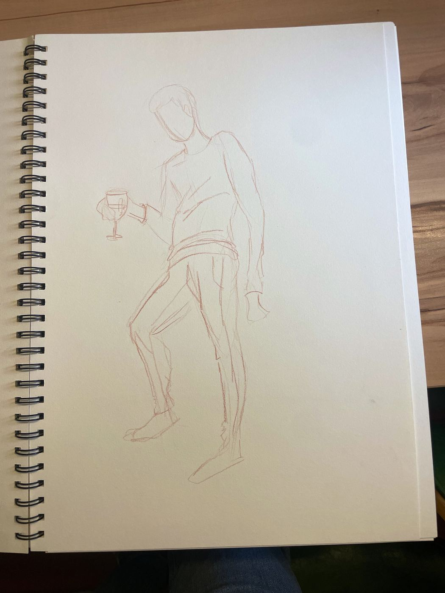
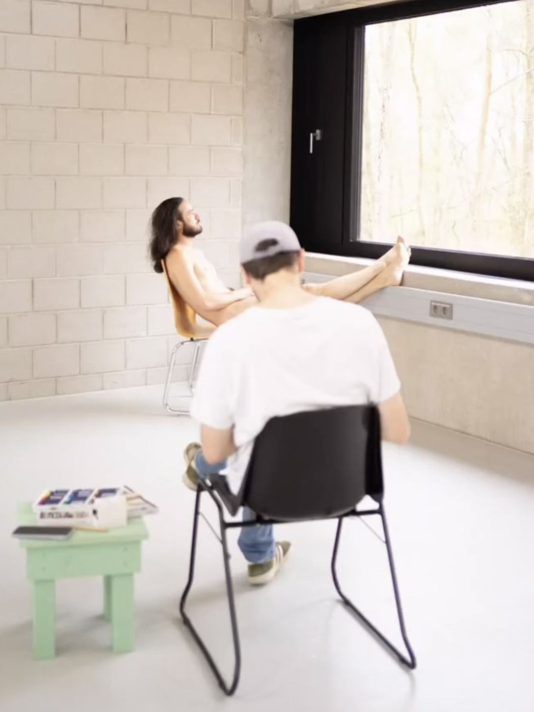
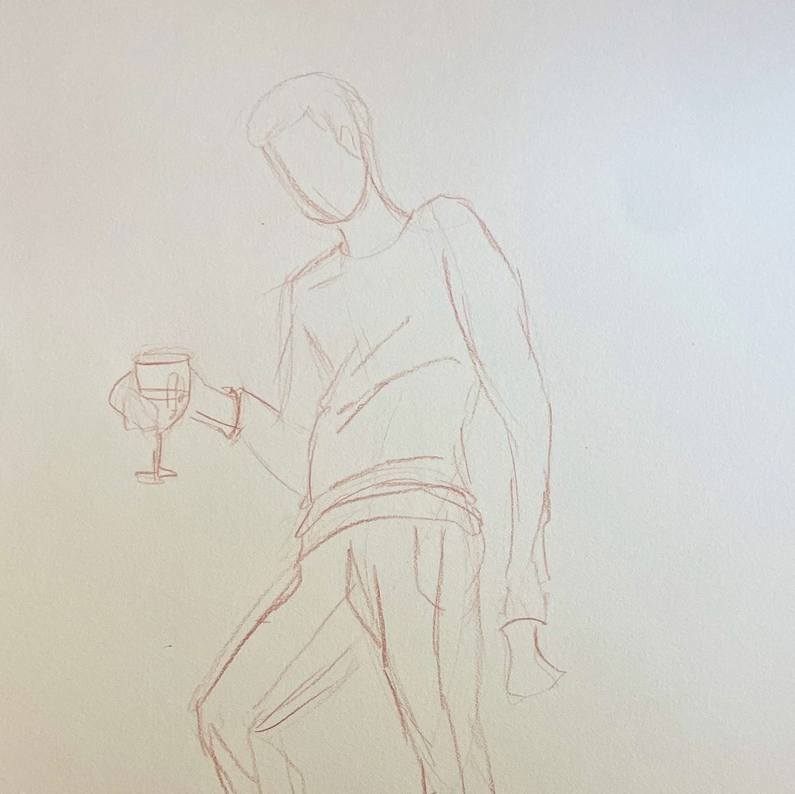
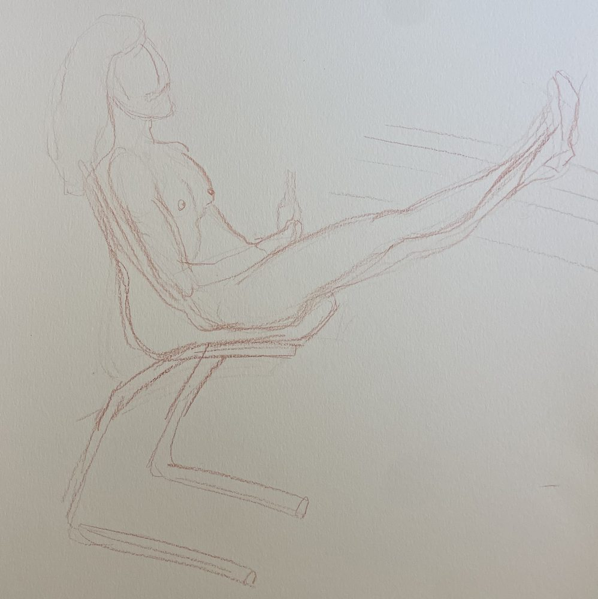
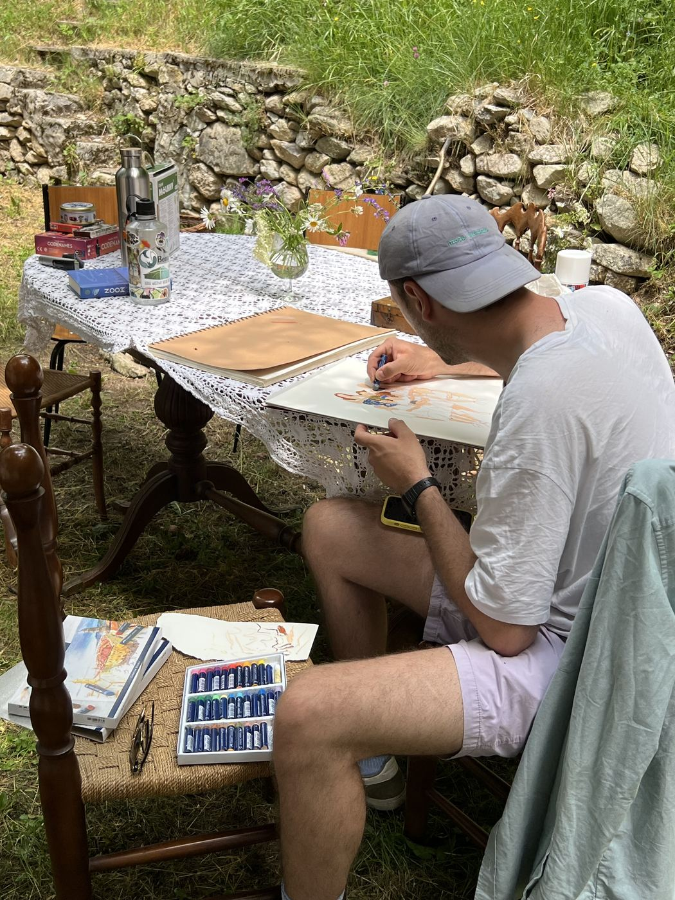
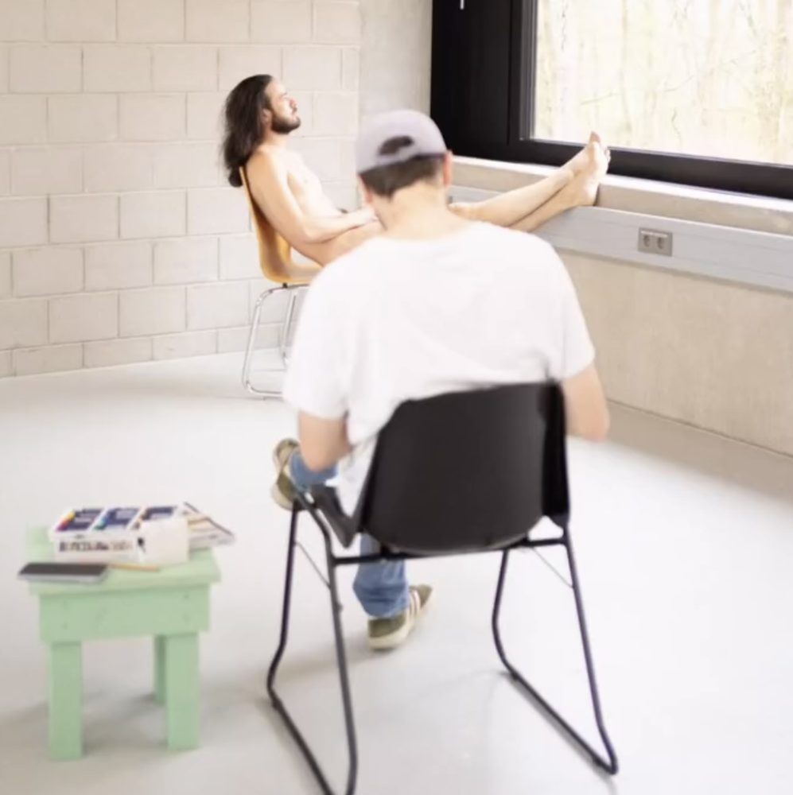

arbeitsweise
motive und vorgehen.
Ausgangspunkt meiner Arbeiten sind häufig beiläufige Situationen und Körperhaltungen, die ich im Alltag beobachte oder fotografisch festhalte. In der Zeichnung löse ich die Figuren zunehmend aus ihrem ursprünglichen Umfeld. Dabei geht es mir weniger um eine genaue Wiedergabe als um die Haltung, die Beziehung der Personen zueinander und die Stimmung des beobachteten Moments. Aus dieser Reduktion entwickelt sich anschließend die malerische Arbeit. Meine Werke entstehen in unterschiedlichen Techniken. Neben Acryl- und Ölmalereien bilden Zeichnungen mit Ölpastellkreide auf Leinwand oder Malkarton einen besonderen Schwerpunkt.








ausstellungen
seit 2023 freischaffender künstler in freiburg.
- 2026Drinnen & Draußen – mit Erold SommerBIERLE Bar, Freiburg · Vernissage am 5. Oktober 2026
- 2026Platonic Symposium: Formen der Liebe – mit Erold SommerGalerie des Westpfalz-Klinikums, Kaiserslautern · Januar bis März 2026
- 2025Platonic Symposium – mit Erold SommerWeingut und Brennerei Andreas Dilger, Freiburg · Juni bis August 2025
presse
- 01/2026Westpfalz-Klinikum – „Formen der Liebe. Zeichnungen von Lukas Bärmann und Erold Sommer fangen reale Momente ein“Pressemitteilung
- 01/2026Die Rheinpfalz – „Ausstellung im Westpfalz-Klinikum“Ausgabe Kaiserslautern, 8. Januar 2026
- 01/2026Treffpunkt Pfalz – „Kunstausstellung ‚Formen der Liebe‘ von Januar bis März 2026 in Kaiserslautern“5. Januar 2026
- 06/2025Badische Zeitung – „Kunstausstellung“Ausgabe Freiburg, 25. Juni 2025
- 06/2025tacker.fr – „Vernissage der Kunstausstellung ‚platonic symposium‘“Veranstaltungsankündigung
kontakt
Für Anfragen zu Werken, Ankäufen, Aufträgen oder Ausstellungen freue ich mich über eine Nachricht.
art@lukasbaermann.de instagram: @lukasbaermann